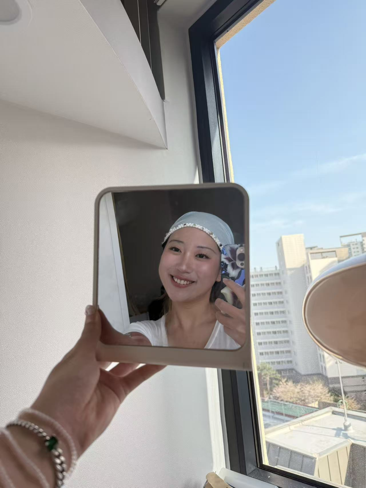

Cyra Dong
Cai Dong · 董猜 · 동채하
AI Builder
LLM Engineer
Agent Systems
Crypto × AI
Multimodal ML
Statistics & Philosophy @ Yonsei. Building LLM applications,
multimodal ML pipelines, and agentic systems. Interested in
AI × Crypto infrastructure and AI × Clinical Neuroscience.
延世大学统计与哲学双学位。专注于 LLM 应用、多模态机器学习与自动化系统构建。
关注 AI × 加密基础设施及 AI × 临床神经科学。
AI Engineer Intern · Digital AI Division · Hangzhou
- Integrated dual LLM APIs (OpenAI + DeepSeek) for internal knowledge Q&A prototype; designed prompt templates and response parsing workflows
- Cleaned ~10K equipment logs and supply chain records with Python/pandas for downstream AI/ML pipelines
Research Assistant — AI4ClinicalPsychology Lab
- Built multimodal ML pipeline: video → feature extraction (MediaPipe/OpenSMILE) → emotion classification → LLM-based therapist evaluation; automated 3,000+ video samples
- Conducted meta-analysis of 20+ clinical studies using Covidence to identify treatment efficacy moderators
Research Assistant
- Engineered 4-layer auditable R pipeline processing 10K+ participants, extracting 7 core sleep behavior metrics
- Developed three-stage parsing framework (decision tree + temporal correction) resolving noisy free-text and timestamp anomalies
Research Technician · Social Psych Lab
- Built analysis pipeline for 1,070 survey responses; designed PsychoPy experiments on AI trust and decision-making
- Co-authored manuscript submitted to Journal of Applied Social Psychology
Research Assistant
- Quantifying lexical difficulty and modeling bilingual phonological permeability to explain cross-linguistic interaction patterns
AI 工程实习生 · 数字化AI事业部 · 杭州
- 集成 OpenAI + DeepSeek 双 LLM API，设计提示模板与响应解析流程，构建内部知识问答原型系统
- 使用 Python/pandas 清洗约 10,000 条设备日志及供应链数据，为下游 AI/ML 管道提供高质量数据集
研究助理 — AI4ClinicalPsychology Lab
- 构建多模态机器学习管道：视频 → 特征提取（MediaPipe/OpenSMILE）→ 情绪分类 → 基于 LLM 的治疗质量评估；自动化处理 3,000+ 临床视频样本
- 使用 Covidence 对 20+ 临床研究进行元分析，识别治疗效果的关键调节变量
研究助理
- 构建四层可审计 R 语言数据管道，处理 10,000+ 参与者数据，提取 7 项核心睡眠行为指标
- 开发三阶段解析框架（决策树 + 时间校正算法），解决自由文本噪声和时间戳异常问题
研究技术员
- 构建 1,070 份问卷的全分析管道；独立设计 PsychoPy 行为实验，研究 AI 信任与决策机制
- 合著论文已提交至 Journal of Applied Social Psychology
Multimodal Clinical Emotion Recognition Pipeline
Python · MediaPipe · OpenSMILE · Py-Feat · LLM Evaluation Layer
End-to-end system: raw video → facial expression + acoustic feature extraction → ML classification → LLM-based assessment. Automated 3,000+ video evaluation pipeline for Penn Medicine.
ClinicalBERT Trauma Classification
HuggingFace · ClinicalBERT · PyTorch
Fine-tuned ClinicalBERT for clinical trauma text classification, achieving F1 = 0.84. Designed stratified sampling for class imbalance.
Longitudinal Behavioral Data Pipeline — Stanford
R · Decision-tree parsing · Temporal correction algorithms
Fully reproducible pipeline processing 10,000+ participants / 14,000+ records. Three-stage framework resolving free-text noise and timestamp anomalies.
Yonsei University
B.S. Statistics & Data Science · B.A. Philosophy (double major)
Minor: English Linguistics
2023 – 2027 (Expected)
GPA: 3.89/4.3
Washington University in St. Louis
Exchange · Philosophy-Neuroscience-Psychology track
Jan – May 2025
GPA: 3.75/4.0
Underestimation of Others' Attitudes Toward AI — third author; Journal of Applied Social Psychology
Perceived Economic Inequality Inhibits Pro-Environmental Engagement — third author; British J. Social Psychology, 64(2), e12815
Predicting Next-Day Suicidal Urges Using EMA & Passive Sensing — Poster, ABCT Annual Convention 2025
AYUI — Yonsei Undergraduate Immunologists
Jinri (진리) Scholarship — Yonsei (awarded twice)
The Secret Book Society — English Literature & Wine Club
Peking Univ. Peiwen Cup — Literary Writing, National 2nd Prize (2018)